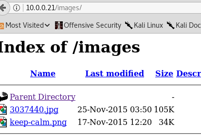

Target IP: 10.0.0.21
I changed my attacker machine and now it's behind NAT. Also, this machine has vmware tools installed.
root@kali:~# nmap -A 10.0.0.21
Starting Nmap 7.70 ( https://nmap.org ) at 2018-06-12 15:48 EDT
Nmap scan report for 10.0.0.21
Host is up (0.00072s latency).
Not shown: 999 filtered ports
PORT STATE SERVICE VERSION
80/tcp open tcpwrapped
| http-methods:
|_ Potentially risky methods: TRACE
| http-robots.txt: 3 disallowed entries
|_/cola /sisi /beer
|_http-server-header: Apache/2.2.15 (CentOS) DAV/2 PHP/5.3.3
|_http-title: Site doesn't have a title (text/html; charset=UTF-8).
Warning: OSScan results may be unreliable because we could not find at least 1 open and 1 closed port
Device type: specialized|WAP|phone
Running: iPXE 1.X, Linux 2.4.X|2.6.X, Sony Ericsson embedded
OS CPE: cpe:/o:ipxe:ipxe:1.0.0%2b cpe:/o:linux:linux_kernel:2.4.20 cpe:/o:linux:linux_kernel:2.6.22 cpe:/h:sonyericsson:u8i_vivaz
OS details: iPXE 1.0.0+, Tomato 1.28 (Linux 2.4.20), Tomato firmware (Linux 2.6.22), Sony Ericsson U8i Vivaz mobile phone
TRACEROUTE (using port 80/tcp)
HOP RTT ADDRESS
1 ... 30
OS and Service detection performed. Please report any incorrect results at https://nmap.org/submit/ .
Nmap done: 1 IP address (1 host up) scanned in 62.66 seconds


Going to locations defined in robots.txt gives this as result:

I had to use a walkthrough to figure out that I need to go to /fristi. I guess I should have picked up on that after looking at robots.txt.
/fristi looks like this:

There is a message in the source code:

Also there is base64 data as comment.Converting the base64 data results in an image file with this:

I can guess that eezeepz is a username but I didn't guess that the text in the image was the password but it was...
logging in takes me here:

I can't upload .php file but I can upload .gif file so I did upload one and got this as a result:

I can access the gif

I uploaded simple-backdoor.php.gif without modifying contents of simple-backdoor.php and I was able to access that as well.

After looking in /bin and and /usr/bin, I didn't see netcat or nc. I did see wget and curl. oh and python is also installed.
I found some python shells here: https://github.com/infodox/python-pty-shells
I used tcp reverse and got a shell. (earlier i did say that im using nat and I am. I had it connect back to another machine)
When doing ps and netstat, i noticed that mysql was running. I checked the webserver files to see if it contained info about mysql and it did.

This is what the database had:

uname -a shows the following:
Linux localhost.localdomain 2.6.32-573.8.1.el6.x86_64 #1 SMP Tue Nov 10 18:01:38 UTC 2015 x86_64 x86_64 x86_64 GNU/Linux
I looked for exploits for 2.6.32 centos and found this: https://www.exploit-db.com/exploits/25444/
The system also has GCC on it. I downloaded, compiled, and executed the code and it didn't work.
I initially looked at the home folder and passwd but I went back and examined it again. I was able to access /home/eezeepz.
It has an interesting file:

The notes.txt contains this:
Yo EZ,
I made it possible for you to do some automated checks,
but I did only allow you access to /usr/bin/* system binaries. I did
however copy a few extra often needed commands to my
homedir: chmod, df, cat, echo, ps, grep, egrep so you can use those
from /home/admin/
Don't forget to specify the full path for each binary!
Just put a file called "runthis" in /tmp/, each line one command. The
output goes to the file "cronresult" in /tmp/. It should
run every minute with my account privileges.
- Jerry
I started out by doing this:


I shoulda paid close attention to the note...
I echoed /usr/bin/whoami to the file and it ran. It was running as admin.
Now to get admin shell, I can have the cron job run python reverse shell. I modifed the port on the old python script I uploaded and uploaded the updated one and got shell.

Here are the files I see in the admin folder:

I examined the files that I thought were interesting:

Encoding basically takes arg as input then turns it into base64 and reverses it, before applying rot13 operation.
I decoded the passwords using python:

The first password gets me access to fristigod account.
second password is for the admin account.
I moved into the home folder for fristigod account and discovered a hidden dir with a binary

I used the following to disassemble the binary:
objdump -d -M intel doCom
In the main function I see this:

getuid returns uid in eax, which gets moved to rbp-0x4 and then compared with 0x1f7, which is 503. UID 503 is for fristi user.
I examined sudo -l output and I was able to run the binary as fristi user and get shell.


This one was fun.I didn't make too many mistakes and I didn't have to look at other walkthroughs as much as I did for pwnlab init.